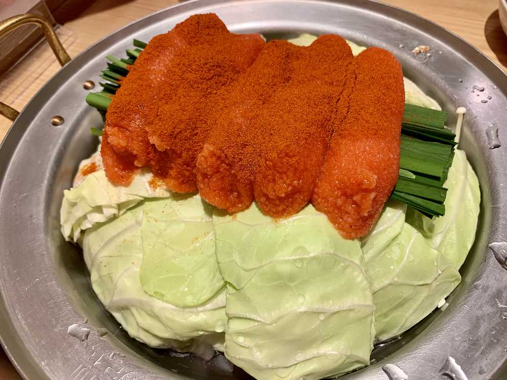
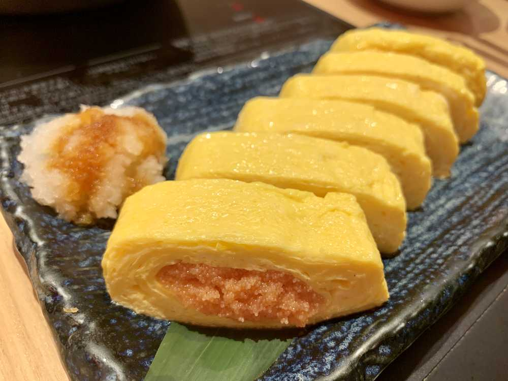

こんばんは🌆
ひいだよ🍓

じゃーん！！
これなんでしょう😚😚
正解は…
明太子もつ鍋です😳😳😳
昨日人生で初めてもつ鍋を食べました！！
結構好き嫌いが分かれるって聞いてたから
どんなものなのだろうと思っていたのですが
私は美味しく食べられました😇
それから今気づいたけど
出来上がってからの写真を
撮り忘れたごめん。笑
そしてこの明太子との相性が
とってもよくて感動🥺
明太子は辛さが選べたんだけど
いちばん辛い激辛にしました🔥
写真で見ていただければわかるように
唐辛子パウダーの量がすごい笑
でもひいは大丈夫な辛さでした🙆♀️
家族では辛いの大丈夫な人が
お母さんくらいなので2人で行けてよかった！
最近お兄ちゃんは
辛いのが弱くなったっぽいです😅
そして勉強頑張ったよ〜💪💦
疲れたけどたくさんやれて良かった😊
久しぶりにシャーペン持った気がする💭
シャーペンって学生卒業したら
あんまり使わなくなるものなのかな？？
ボールペンの方が
やっぱり使うところ多いか🤔🤔
まあそんなところにして。。
今日はお父さんの秘密を
教えちゃいます〜㊙️
お父さんのLINEがとにかく可愛いんです😂
この間久しぶりに一緒に
ご飯を食べに行ったあと
「今日は楽しかったね」っていうメッセージが来たんですけど。。
今日は楽しかったねの「ね」の部分だけ
なぜかぷくぷくのフォントになってる「ね」になっていてとても可愛かった☺️笑
あとはひいが父の日に手紙を送ったら
「とっても嬉しかったヨ」ってきて。
こういう語尾だけカタカナにするの
昔流行ったやつじゃん！って思った😅
教えてあげたい。。。
もうその時代じゃないよって。。。
あとは疑問形で何か聞いてきたときの
クエスチョンマークがなぜか
逆向きになってるんだよね。。
これ→ ¿
なんか頑張って流行りに乗ろうとしてるのが
可愛いなって思いました🙂💦笑
それじゃあまたね〜！
공부했다~!!!
피곤했지만 오랜만에 많이 공부해서 다행이에요!!
그리고 어제는 인생에서 처음으로
[모츠나베]를 먹었어요🍲
혹시 [모츠나베]를 아세요???
명란하고 같이 먹었는데 너무 맛있었어요!
피곤했지만 오랜만에 많이 공부해서 다행이에요!!
그리고 어제는 인생에서 처음으로
[모츠나베]를 먹었어요🍲
혹시 [모츠나베]를 아세요???
명란하고 같이 먹었는데 너무 맛있었어요!

明太子の卵焼き〜！！
お腹すいてきたでしょ〜😏😏
ばいばーい👋
ひいまる🥟